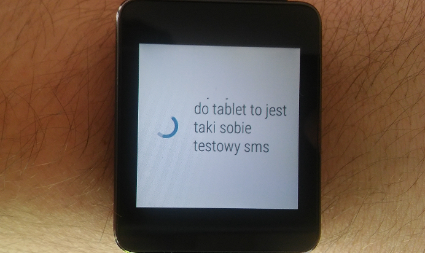

SMS w zegarku
To jedna z aplikacji, które trzeba mieć. Wielkie ułatwienie. Korzystanie z niej oznacza, że w telefonie także ta aplikacja musi obsługiwac Wasze SMSy, ale nic w tym złego. Bez wyjmowania telefonu z kieszeni, kilkoma kliknięciami można odpisać szybkie "ok", "haha", "nie" etc. Można też wysłać emota :] Co jednak jest najważniejsze? Że mając odrobinę ciszy, choć i w autobusie zadziała, można podyktować zegarkowi wiadomość do odesłania i on to zrobi. No magia!

Dlaczego warto zainstalować Messenger?
Gdy przychodzi SMS odruchowo rzucam okiem na nadgarstek. Sprawdzam wiadomość. W 50% przypadków nie muszę sięgać już po komórkę. Ta aplikacja na topozwala. Prowadząc samochód, uprawiając sport, na lekcji, nie, na lekcji nie. W wielu sytuacjach będzie Ci potrzebna. Minusem jest to, że możecie zapomnieć o interpunkcji. No i czasami może sobie nie poradzić z usłyszeniem poprawnym twojego kontaktu.Jednym zdaniem:
Pamiętajcie, że żeby wysłać SMSa z zegarka wystarczy wypowiedzieć: "Ok Google" a potem np: "wyślij SMSa do Mama", "Będe na weekend i będę głodny"
Pobierz z Google Play

Opublikowano: 28.03.2017r. Wszystkie materiały pochodzą ze strony developera